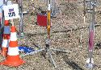
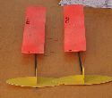
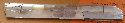
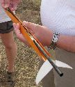
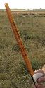
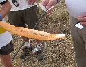
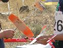

|
|
|

2008WSMC Model Photos
Photoscopyright 2008 by George Gassaway & LAUNCH Magazine.
Photoavailability courtesy of LAUNCHmagazine
Photos of 40mm models,pistons, and S4 Boost Glide models.
Most of the following photos are highly croppedfrom the orginal pics,
often presented without any reduction, to maximize the detail to beobserved.
 Practice Day - Unknown flop-Rotor copter with swept back outer blades. I had thought of doing something like this. The idea is that the swept back outer tips cause the main blade to twist for more negative angle at deployment, to spin up faster. Then as it spins up faster, the twist flattens out. I do not know how these fared in S9. | Practice Day- Greg Stewart looks over one of the British flop-rotor models. | Contest Day one - Keith Vinyard and his S9 model. He used non-flop blades, the blades highly undercambered, wrapped around a mandrel to set the curve. We think he had a better dead-air modle than Trip Barber and George did with flop-rotors. His main body was Kapton for the 40mm section, glass/tissue for the tailcone. | ||
| George's S9A model. Flop-rotor, Kapton 40mm with fiberglass tailcone. Flown off an 11mm normal piston (not a FH), and very long tower. The yellow ring helps keep the rails aligned near the middle of the tower rails since they are so long (there also was an alignment ring at the top). Some piston-tower combos I saw were too short, this one made sure the model still had tower rails guiding it after the piston tube extended and released. |  Notable here, no piston | Another Russian S9 model, again no piston. | ||
| Same Russian S9 model | Japanese S9 model loaded onto Piston | Same Japanese model, a bit fuzzy, closer view of piston interface | ||
| A couple of German S9 models using pistons. | German S9 model on piston. The piston tube seems to be graphite, the cloth weave is visible. Some sort of metal adapts the piston tube to the engine. The piston tube seems to be a somewhat larger diameter than it needed to be, given the engine diameter. | A couple of Japanese S9 models on pistons. These have a metal adapter for the engine, but unlike the German models the piston tubes are smaller, about the diameter to match the engine. | ||
| Junior S6 models by Serbia. These pistons seem to be larger diameter than the engines, and have a metal adapter piece. | Junior Chinese S9 model. 4-bladed, unique in having 4 blades, and unusual in having flat main blades and dihedral for the outer flop blades. |
Same Junior Chinese S9 model rotor unit, | ||
| A 6-bladed model, unknown origin. During the descent of one of my S9 flights I saw a 6-bladed model in the same air, coming down pretty quickly by contrast. | Seniors, S6. - Four models in a row, unknown countries. Unfortunately, the models are not in focus. But two can be seen to have some interesting type of metal adapter between the piston and engine. Also two in the middle have a faint dark spiral which may give some clue as to their fabrication. | A Slovakian S6 model, with no piston. Take note of the bottom of the tower, that seems to be an electric match mounted to a hole in the tower base. | ||
| A good close-up of the first model seen in the earlier photo of 4 models. The metal adapter looks to be like a hand-tightened collet-clamp or chuck clamp of some sort. The piston tube is significantly larger diameter than the engine. | Russian S6 model, no piston | Japanese S6 model on piston | ||
| German S6 model, same piston and tower set-up as from S9 |  S4 Boost Glide - A flying wing model. This one is mylar-covered with orange paint that partially flaked away. | Another Flying Wing. These fold up in chord as well as in span. I saw one them being trim-thrown and the glide was incredible. They must be incredibly light, as the mylar-covered structure implies | ||
| Flying Wing | Flying Wing |  Flying Wing, plus booster | ||
|  |
 | Flying wing at lower left. Japanese folding gliders at upper right, with oversized diameter boosters | ||
| British S4 Team. Notable at bottom is one of Ian Dowsett's models which seems to triple its span from boost, not just double the span. | Nigel Bathe's version of the unique design developed by Mike Francis. Nigel took the Silver medal with this. |
Mike Francies' models | ||
|
Mike Francies' model, being folded for boost mode. |  |  | ||
|
Deployed |  | | ||
| Greg Stewart looks over a Flying Wing model | A Couple of Juniors from different countries loading their Scissor-flop models. The one on right is from Lithuania. | Lithuanian JR S4 model. | ||
|
One of the JR Czech S4 gliders |  | | ||
| Ben Reynolds readies his S4 JR model |
Panoramic stitched-together view of the range head. The Junior lanes are to the left of the dirt road, SR on right. At far right, the pad area the U.S. Seniors flew from (next to last lane, last lane was unused). Off in the distance, left side, is the direction where a lot of models were drifting. So take note of short range recovery people from several countries. | |||